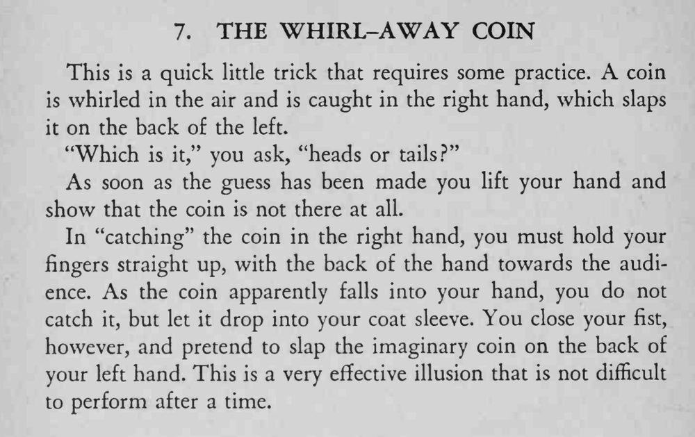

硬币在空中一旋被右手接住，拍在左手手背上；等观众猜完正反，抬手一看，硬币根本不在。
袖子要宽一点；拍手背的力度要和真的拍着硬币一样。

This is a quick little trick that requires some practice. coin is whirled in the air and is caught in the right hand, which slaps it on the back of the left. "Which is it," you ask, "heads or tails?" As soon as the guess has been made you lift your hand and show that the coin is not there at all. In "catching" the coin in the right hand, you must hold your fingers straight up, with the back of the hand towards the audience. As the coin apparently falls into your hand, you do not catch it, but let it drop into your coat sleeve. You close your fist, however, and pretend to slap the imaginary coin on the back of your left hand. This is a very effective illusion that is not difficult to perform after a time.